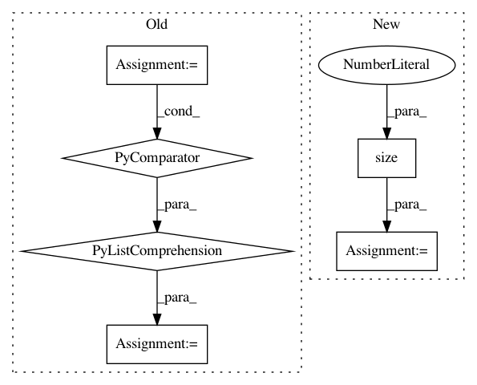

f6532b3c4c329e6d5d5fb846acc441df47616c4c,torch_geometric/nn/models/gnn_explainer.py,GNNExplainer,explain_node,#GNNExplainer#Any#Any#Any#,51
Before Change
optimizer.step()
node_feat_masks = self.node_feat_masks
node_feat_masks = [mask.detach().sigmoid() for mask in node_feat_masks]
edge_masks = [mask.detach().sigmoid() for mask in self.edge_masks]
self.__clear_masks__()
After Change
def explain_node(self, node_idx, x, edge_index, **kwargs):
self.model.eval()
num_edges = edge_index.size(1)
// Only operate on a k-hop subgraph around `node_idx`.
x, edge_index, hard_edge_mask, kwargs = self.__subgraph__(
node_idx, x, edge_index, **kwargs)
// Get the initial prediction.
with torch.no_grad():
log_logits = self.model(x=x, edge_index=edge_index, **kwargs)
pred_label = log_logits.argmax(dim=-1)
self.__set_masks__(x, edge_index)
self.to(x.device)
optimizer = torch.optim.Adam([self.node_feat_mask, self.edge_mask],
lr=self.lr)
for epoch in range(1, self.epochs):
optimizer.zero_grad()
h = x * self.node_feat_mask.view(1, -1).sigmoid()
log_logits = self.model(x=h, edge_index=edge_index, **kwargs)
loss = self.__loss__(0, log_logits, pred_label)
loss.backward()
optimizer.step()
node_feat_mask = self.node_feat_mask.detach().sigmoid()
edge_mask = self.edge_mask.new_zeros(num_edges)
edge_mask[hard_edge_mask] = self.edge_mask.detach().sigmoid()
self.__clear_masks__()
In pattern: SUPERPATTERN
Frequency: 3
Non-data size: 6
Instances
Project Name: rusty1s/pytorch_geometric
Commit Name: f6532b3c4c329e6d5d5fb846acc441df47616c4c
Time: 2020-03-22
Author: matthias.fey@tu-dortmund.de
File Name: torch_geometric/nn/models/gnn_explainer.py
Class Name: GNNExplainer
Method Name: explain_node
Project Name: facebookresearch/ParlAI
Commit Name: 5b4221cfdb9406e2eb199f4e2cfe1c24ab475d7b
Time: 2019-08-07
Author: ahm@fb.com
File Name: parlai/core/torch_ranker_agent.py
Class Name: TorchRankerAgent
Method Name: eval_step
Project Name: facebookresearch/pytext
Commit Name: 8f54218a8ed67dc6c3df585ff89777b1e2bb2c26
Time: 2019-12-06
Author: hyzhan@fb.com
File Name: pytext/optimizer/sparsifiers/tests/sparsifier_test.py
Class Name: TestSparsifier
Method Name: test_param_mask_with_pre_mask